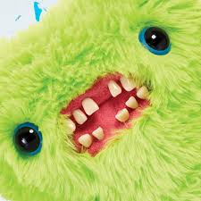
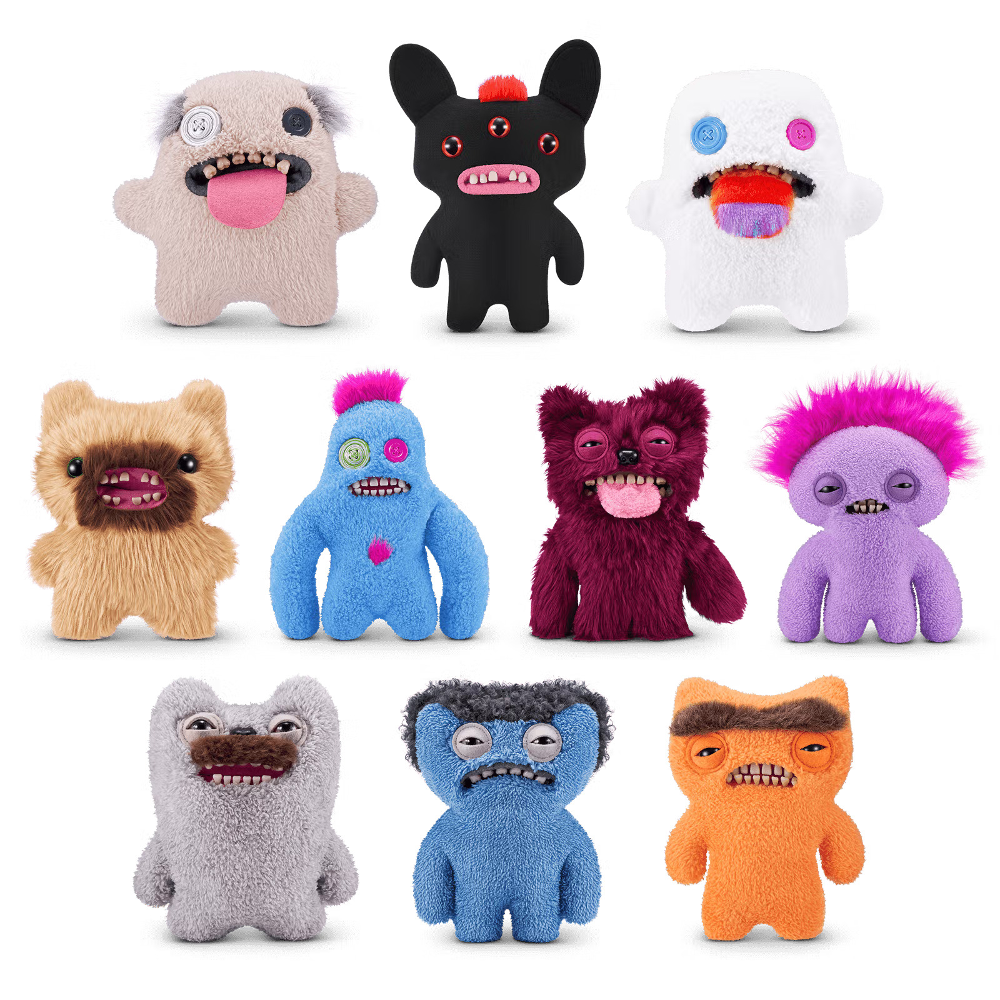

Fugglers: The Funny Ugly Monsters
¿Qué son los Fugglers?
Los Fugglers, conocidos como "Funny Ugly Monsters", son peluches únicos y extraños famosos por sus dientes humanos, expresiones raras y diseños poco convencionales. A diferencia de otros juguetes, su apariencia es lo que los hace especiales y divertidos.

¿Por qué son tan populares?
Los Fugglers se hicieron populares porque rompen con la idea de los juguetes adorables. Cada uno tiene una personalidad diferente, colores llamativos y un diseño que mezcla lo feo con lo gracioso.
Colecciones y estilos
Existen muchos tipos de Fugglers: grandes, pequeños, peludos, con ojos saltones y dientes exagerados. Cada colección ofrece diseños distintos que los hacen ideales para coleccionistas.
